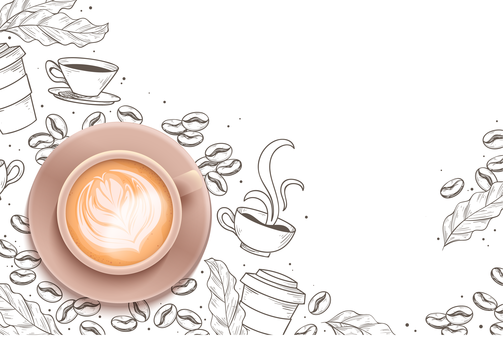

LA COLAZIONE NEL MONDO

La colazione serve a tutti noi per iniziare con la giusta carica la giornata, ma non tutti mangiano o bevono le stesse cose durante il rito del primo pasto quotidiano. Se le differenze si possono notare già nella stessa Nazione, figuriamoci tra i vari Paesi del mondo. Ogni località mette in tavola alimenti differenti, alcuni dei quali ci possono sembrare pure molto strani o quantomeno parecchio dissimili da quelli che abitualmente consumiamo la mattina.